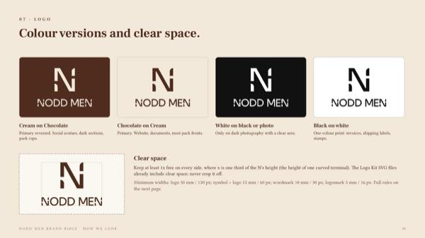
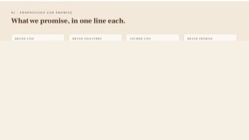

Building brands
from zero to
momentum.
I work across the decisions, experiences and operating systems that turn an idea into a business.
Explore deeply. Connect thoughtfully. Build deliberately.
 01 / BRAND BIBLE
01 / BRAND BIBLE
02 / SYSTEMS & INTELLIGENCE
03 / RESEARCHExplore deeply.
Connect thoughtfully.
Good work rarely lives inside one department. I look for the relationship between the customer, the product, the story, the numbers and the systems that hold everything together.
Discover
Context, market, customer
Define
Problem, positioning, direction
Build
Brand, product, experience
Grow
Demand, content, commerce
Improve
Systems, insight, iteration
One brand.
Six connected disciplines.
Nodd Men is the flagship case study: a pre-launch D2C skincare business, approached as one connected system rather than a collection of isolated tasks.

Building a brand.
Across the whole business.
From market intelligence and brand foundations to Shopify, content, financial models, dashboards and launch operations.
Read the case study ↗Business-minded.
Creatively wired.
A cross-functional operator with a creative practice in writing and music. Curious about how people think, why brands matter and how ideas become real.
A little more about me ↗Different disciplines. A shared curiosity about how things work.
The interesting work happens where disciplines meet.
Start a conversation ↗